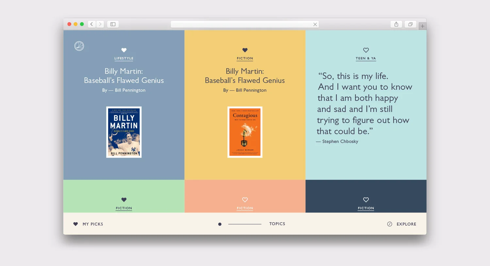
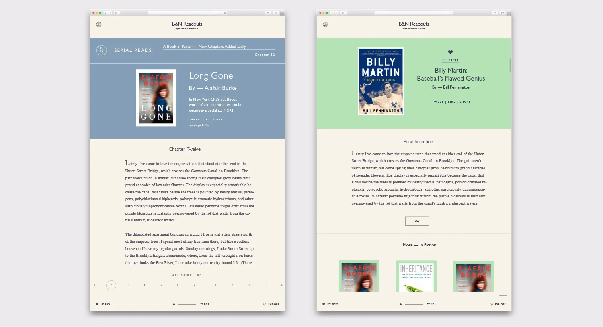
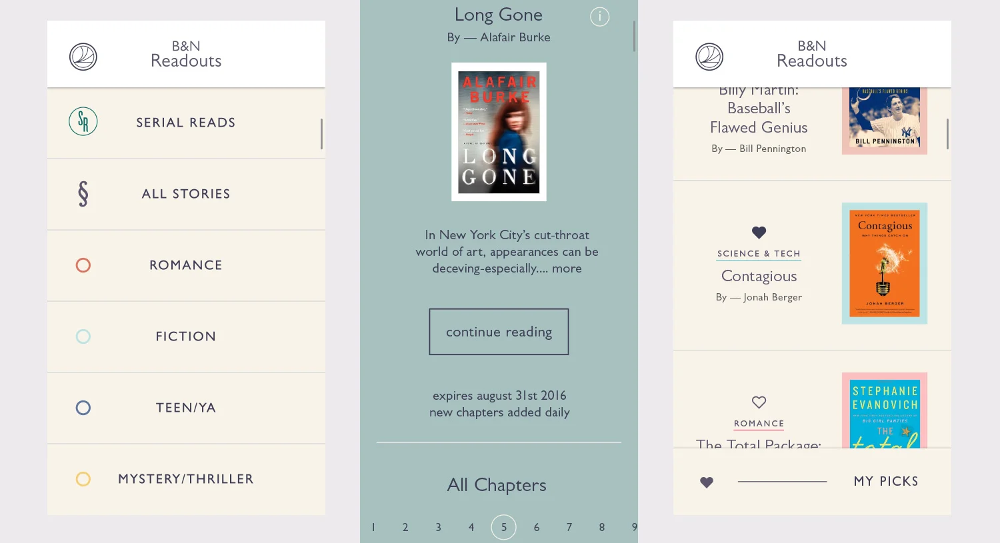
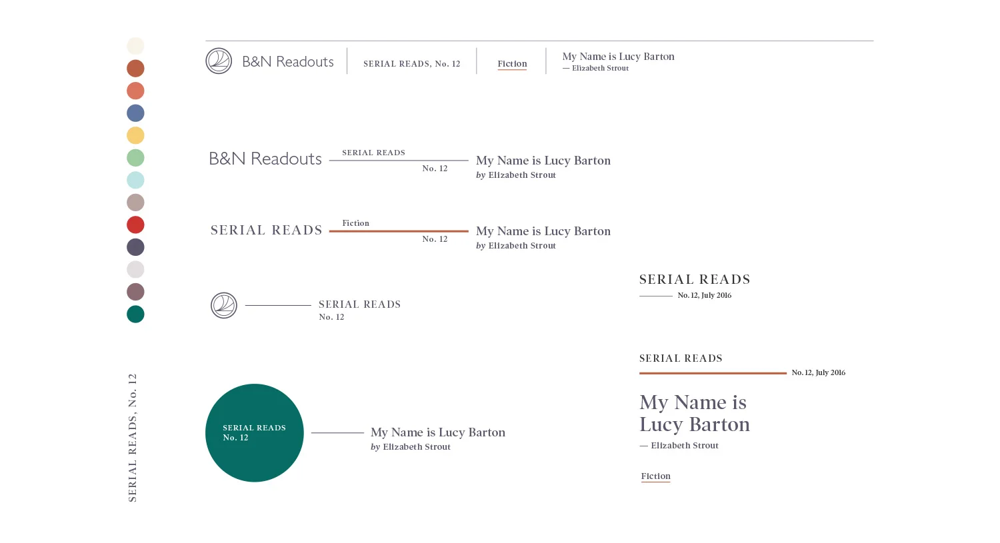

NOOK Readouts
Topic browsing, article pages, and the mobile reading experience for B&N Readouts.
- Client
- Barnes & Noble / NOOK
- Role
- Visual & interaction design

Topics
Colorful topic cards for lifestyle, fiction, and teen and YA picks.

Articles and mobile
A serial read chapter, a featured biography, and the mobile reading screens.


Serial Reads branding
Logo and lockup explorations for the Serial Reads sub-brand.
